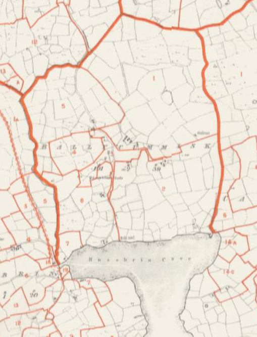
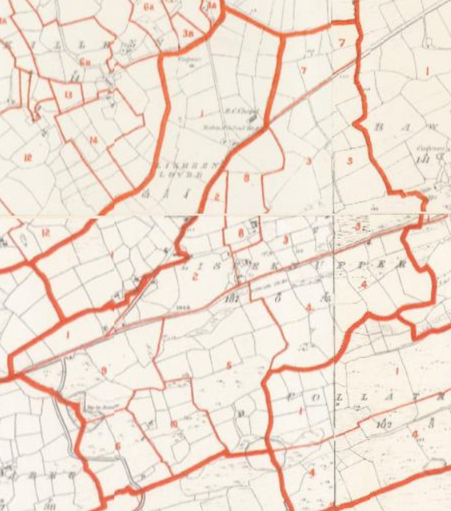
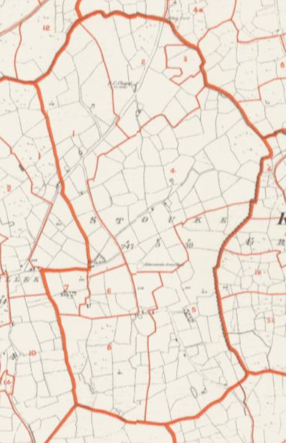

Cunnamore

Ballycumisk

Upper and Lower Lisheen

Stouke
After Walter Coppinger was attained for treason, a royal warrant of King William III, in 1697, granted John Lesley, Doctor of Divinity, large areas of forfeited estates including the land at Rincolisky. Afterward in 1698, John Lesley leased Rincolisky for 999 years, to James Coppinger, grandson of Walter, and son of Domenic Coppinger and Dorothea Townsend. The history of the Townsends says that “Dorothea's son, James Copinger, forfeited the lands that he had inherited at Rincolisky (Whitehall) and others in 1690 because he was a Roman Catholic and supported James II.” However, the deeds show that he acquired the land back through the lease from John Lesley. James Coppinger then mortgaged the land to several parties including his mother’s family, the Townsends. These deeds in the early 1700s continued to reference James Coppinger of Rincolisky. In a series of deeds in 1716, James Coppinger sold the lands of Rincolisky to the Townsends, transferring the remainder of the 999 year lease from John Lesley. The Coppingers continued to be resident at Rincolisky until Samuel Townsend took residence after a deed in 1729. It is possible the Hingstons first arrived in this area around this time when Samuel Townsend took over Rincolisky.
Succeeding generations of Lord Audley retained, and made deeds for, rights to large areas of land in Ireland, including Rincolisky and surrounding Aghadown parish, from the 1600s well into the 1800s. Lord Audley owned mines in this area including the islands of Roaring Water Bay until the mid 1800s. The tithes of Aghadown parish were partly “impropriate” to Lord Audley. (Part of tithes went to the church and part to an “impropriator”, a higher-level landlord). So, at the same time as the Townsends “owning” the Rincolisky/ Whitehall area, they were making lease payments to the Leslie family (not clear when this ended) and part of their tithes (and those of their lessees) went to Lord Audley. The Hingstons leased land from the Townsends, and in turn rented houses and land to tenants. Ireland had a complicated system of multiple levels of land holding and rights.
In a deed in 1768, registered in 1776, (Vol. 313 Pg. 233 No. 208285) Edward Mansell Townsend of Whitehall leased to Samuel Hinkson of Baltimore, of County Cork, Revenue Officer. “the lands of middle Cunnymore as they were then bounded and in the possession held by the said Samuel Hinkson,”…. “for the natural lives of Samuel Hinkson, Hanah Hinkson his wife, and Wm Hinkson his eldest son,” at a yearly rent of 22 pounds.
In a deed in 1777, (Vol. 316 Pg. 211 No. 211580) Edward Mansel Townsend of Whitehall leased to Samuel Hinkson of Cunnamore, farmer, “all and those part or division of the lands of Cunnamore known by the name and description of North Cunnamore, four gneeves of land.” The lease was for three lives named in the lease (not stated in the registered memorial) for a yearly rent of 32 pounds. (A “gneeve” was a measure of land of about 10 acres.)
In the deed for Middle Cunnamore in 1768, registered 1776, Samuel is shown residing in Baltimore and working as a Revenue officer. The deed wording “as they were then bounded, and in the possession” sounds like it was a renewal of a lease for land already in his possession. It is possible his father William had leased it previously and died by that time. In the deed for North Cunnamore in 1777, Samuel is shown as resident in Cunnamore and a farmer.
Both deeds are for 3 lives which was a common form of long-term lease. In the deed for Middle Cunnamore, Samuel’s wife is shown as Hanah, and eldest son William. WEH says Samuel married Ann Smyth, which is confirmed by the Index of Marriage Licence Bonds (married 1763). It is not known if Ann was recorded as Hanah in the deed or if this is a second (third?) wife.
Edward Hingston, of Cunnamore, Esq., leased to Bartholomy Desmond, of Cunnamore, farmer, the “south gneeve” of Cunnamore, now in the possession of Edward Hingston and Darby Regan, for 21 years, in a deed in 1805 registered 1808 (Vol 594 Pg. 558 No. 406161). Edward would have been leasing land from the Townsends. This was common for land to be leased to a second party, then the second party leases to a third party. This deed would still have been in effect when Edward died. (WEH says that Edward died in 1813.). Descendants of Edward continued to live in South Cunnamore along with Desmond families, as shown in the Griffiths Valuation 1853 and the census of 1901 and 1911.
81. Freke Hingston ’s 60 acres was likely Middle Cunnamore 39 acres from his father Samuel, and the remainder could have been either part of North or South Cunnamore. It is not known why Freke would have the land rather than his older brother William named in Samuel’s 1768 Middle Cunnamore lease. Perhaps William concentrated on the boats and fishing as WEH says, and Freke leased the farmland. WEH says Freke bought the Whitehall estate from Edward. The whole area was known as Whitehall. Maybe this referred to some additional land Freke acquired from Edward in South Cunnamore.
It is likely that 33. Allen Hingston had his father Edward’s land in South Cunnamore because the older brother 21. William was at Cape Clear by this time.
The Valuation Office Books (VOB) are the handwritten notebooks that were used to document property tax valuations of Ireland. The main books were Field Books (agricultural land valuations), House Books (house valuations), Tenure Books (land holding, lease, and rent details), and other related books. Tenure and House Books are available 1849 – 1851 for Cunnamore.
The Griffiths Valuation was published based on the valuations done by the Valuation Office supervised by Sir Richard Griffith. The report for West Carbery was published in 1853. The parcels of land are numbered in each townland and refer to numbers on Ordnance maps. North Cunnamore is 1 and Middle Cunnamore is 2. However, for South Cunnamore, the valuations list areas 3A, 3B, 4A, 4B, 5, 6, while the map shows areas 3A, 3B, 3C, 3D, 4, 5. (Maybe area 6 in the valuation is 3C and 3D on the map.)
Area 2 had 10 houses in the 1849 and 1850 VOB House books. Samuel had the largest house 2a, including some outbuildings, houses 2 b and c were unoccupied, and the rest he rented to others. On the historic Ordnance map the houses were close to Rincolisky harbour shoreline. No house was shown where the current house is on that farm now called “Whitehall Farm.” A smaller house 2h showed William Hingston renting from Samuel. However, in the 1849 book this was crossed out and another name written, and 3 other houses stroked and marked “Down.” In 1850 it still showed William in house 2h and no houses stroked out. (The revisions marked in the 1849 pages could have been done in a later year.) In the Griffiths Valuation there were 7 houses in area 2 with Samuel in 2a, 2b and c unoccupied, and 4 houses rented to others (no William Hingston). It is not known which William Hingston would have been renting a house in area 2, Middle Cunnamore up to 1849/1850. According to WEH, William Hingston, eldest son of 80. Samuel Hingston died in 1852 so he is a possibility. See below for discussion of 37. William Hingston in South Cunnamore.
In the VOB Tenure Book, Samuel Hingston was leasing Lisheen Lower from Edward Townsend “at will”, which means a continuing long-term lease. In the VOB House Books 1849/1850 Samuel was living at Cunnamore house 2a, and renting out the houses there and in other areas. However, in the Griffiths Valuation, house 2a in Cunnamore and house 1a in Lisheen Lower are shown as Samuel Hingston residences. When Samuel married Anne Symms in 1848, his residence is shown as Cunnamore. At some point after this he moved to Lisheen Lower and continued to rent out Middle Cunnamore. Samuel was resident at Lisheen Lower when he married Elizabeth Wolfe in 1876, and this is where their 5 sons were born. After Samuel died in 1888, Elizabeth continued renting out the Middle Cunnamore land and houses until 1895.
In 1895, Elizabeth Hingston, as representative of Samuel Hingston, deceased, in a deed of assignment (1895 Book 56 No. 82), transferred the lands of Middle Cunnamore and the Island of Coolim, for the “residue of the therein recited statutory term” to Edward Trinder of Fausagh (Fasagh). (Edward’s first wife Frances Willis was Elizabeth’s cousin.) This would have been an assignment of the remaining term of the lease from the Townsends.
William Hingston married Ellen Wolfe, a widow who had first married a Vickery, in 1849 February 20. She was daughter of William Wolfe of Ballycummisk, Skull (Schull) parish. On the marriage civil registration, William is shown as a farmer of Rincoe, Aghadown. Sometime after marriage, William and Ellen moved to Ballycummisk and shared land with her father. Their oldest daughter Hannah’s baptism 1850 January 25 showed the residence as Ballycummisk. The VOB Field book in 1850 for Ballycummisk shows William Hingston with area 3, 28 acres, and sharing area 4, ½ x 3 acres, and area 5, ½ x 2 acres with William Wolfe. The VOB House book shows William Hingston in house 3a, William Wolfe in house 3b, and house 5a rented to another person. The Griffiths Valuation shows the same land areas and house for William Hingston in Ballycummisk, except area 4 is shared 3 ways with one other person.
Sometime between 1854 and 1856, William and Ellen and family moved to a farm in the nearby townland of Stouke. Their first 3 children, Hannah, Allen, and William were born at Ballycummisk, and the other 3 children, Richard, Freke, and Joseph were born at Stouke. In a will dated 1882 January 23, prior to his death 1882 April 5, William bequeathed to Ellen, the 35 acre farm at Stouke, “held year to year as a tenant of the Collins Lane Estate at seventeen pounds ten shillings yearly,” and the house, buildings, implements and animals. William’s will included the restriction that Ellen “distribute all that she will be possessed of between my three children, Allen Hingston, Richard Hingston, and Joseph Hingston,” and not to anyone else. It is likely that only these three were mentioned since the others were gone to USA already. Afterward, Richard and Joseph went to USA as well leaving just Allen with his mother at the Stouke farm.
In a deed in 1887 (1887 Vol. 2 No. 152), Ellen Hingston, widow, as “beneficial owner” mortgaged the 35 acre Stouke farm to John Vickery, labourer of Stouke. This was just before her son Allen married Hester Roycroft on 1887 February 22. Allen and his family continued on the Stouke farm.
In 1876 a report to the British parliament for landowners in Ireland over 1 acre had two Hingstons of the HNA branch, Reps. of James Hingston, of Aglish House, Coachford, with 211 acres, and Reps. of Rev. George Hingston, of London, with 150 acres, which would be the land at Cloyne. A revised report of landowners in 1876 had three Hingstons of the HNA branch, Reps. of James Hingston, 211 acres, Rev. G.S.C. Hingston, 119 acres, and Rev. James Hingston, 110 acres. No HNC Hingstons were owning land at that time. These reports in the 1870s were part of the review of land reform legislation for Ireland. After the Land Purchase Act of 1885, a process started for tenants purchasing their land from the large landowners, continuing with a second Land Purchase Act in 1903, leading up to full reform with independence in the 1920s. By the time of the 1901 Census some HNC Hingstons were shown as landowners in Cunnamore, Lisheen Lower, and Stouke.
In South Cunnamore in the 1901 census, the head of each individual household was shown as the landholder. Elizabeth Hingston, widow of Allen, was landholder, in a household with her and son Freke. By the time of the 1911, Elizabeth was with son Allen who was renting land in Caherlusky, Schull parish, and son Freke was not found in the census.
In 1901, Ann Hingston, widow of Freke, was landholder for the household with her, son Richard, and son Matthew with wife Ellen and infant Freke Allen. By the 1911 census Matthew was shown as landholder and head of this household. In a land title in 1912 (1912 Vol 91 No. 110) Matthew Hingston was registered as the owner of 11 acres in Cunnamore, a 1/3 share of Goose island, and 2 small unnamed islands.
Townland Maps extracted from Griffiths valuation site
|
Cunnamore |
 Ballycumisk |
|
 Upper and Lower Lisheen |
 Stouke |
| Valuation Office Books (1848 - 1851) | Griffiths Valuation (1853) | ||||||||||
| Parish | Townland | Area No. | Land | Buildings | Area No. | Land | Buildings | ||||
| Name | Area | Name | House No. | Name | Area | Name | House No. | ||||
| Aghadown | Cunnamore | 2 | 34.Samuel Hingston | lease dated 1783 | Samuel Hingston | 2a | 2 | 34.Samuel Hingston | 39 acres | Samuel Hingston | 2a |
| Samuel Hingston | 2b (vacant) | Samuel Hingston | 2b (unoccupied) | ||||||||
| Samuel Hingston | 2c (vacant) | Samuel Hingston | 2c (unoccupied) | ||||||||
| 37.William Hingston | 2h | Other houses rented to others | |||||||||
| Other houses rented to others | |||||||||||
| 3A | 37.William Hingston | (1/2) lease dated 1783 | William Hingston | 3a | 3a | 40.Allen Hingston | 1/2 x 8 acres | Allen Hingston | 3a | ||
| 3B | 37.William Hingston | (1/2) lease dated 1783 | William Hingston (1849 says down) | 3c | 3B | 40.Allen Hingston | 1/2 x 2 acres | Allen Hingston | 3b (unoccupied) | ||
| Other houses rented to others | Rented to other | 3c | |||||||||
| 4A | 37.William Hingston | lease dated 1783 | 4a | 40.Allen Hingston | 1 acres | ||||||
| 4B | 37.William Hingston | lease dated 1783 | 4b | 40.Allen Hingston | 8 acres | ||||||
| Aghadown | Lisheen Lower | 1 | 34.Samuel Hingston | Lease at will | Samuel Hingston | 1i (used as office) | 1 | 34.Samuel Hingston | 61 acres | Samuel Hingston | 1a and 1i |
| RC Chapel | 1h | RC Chapel | 1g | ||||||||
| National School | 1 g | National School | 1 f | ||||||||
| Rented to others | 11 houses | Rented to others | 6 houses | ||||||||
| Aghadown | Lisheen Upper | 6 | 34.Samuel Hingston | 40 acres | Rented to other | 6a | |||||
| Aghadown | Islands | 3. Coolim | 34.Samuel Hingston | Lease at will | 3. Coolim | 34.Samuel Hingston | 2 acres | ||||
| 4 and 5 | 40.Allen Hingston | small | |||||||||
| 6. Goose island | 37.William Hingston | Lease at will | 6. Goose Island | 40.Allen Hingston | 1/2 x 0.8 acres | ||||||
| Skull | Ballycummisk | 3 | 37.William Hingston | 28 acres | William Hingston | 3a | 3 | 37.William Hingston | 28 acres | William Hingston | 3a |
| William Wolfe | 3b | William Wolfe | 3b | ||||||||
| 4 | 37.William Hingston | 1/2 x 3 acres | 4 | 37.William Hingston | 1/3 x 3 acres | ||||||
| 5 | 37.William Hingston | 1/2 x 2 acres | Rented to other | 5a | 5 | 37.William Hingston | 1/2 x 2 acres | Rented to other | 5a | ||
Return to Hingston One-Name Study
Written by David Cotcher; Added 29th January 2021 Chris Burgoyne